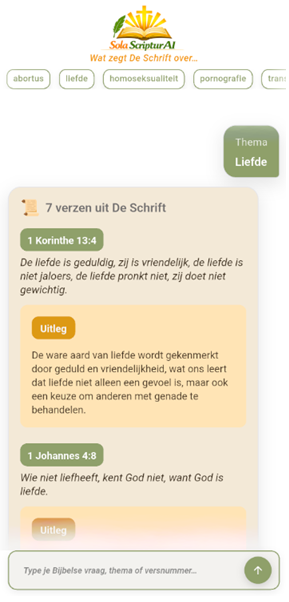

Sola ScripturAI
Bijbelse antwoorden, door De Schrift alleen.
Bijbelse antwoorden, door De Schrift alleen.
Sola ScripturAI is een moderne Bijbel-app die kunstmatige intelligentie gebruikt om Bijbelse vragen te beantwoorden op basis van de Herziene Statenvertaling (HSV). De app combineert de betrouwbaarheid van Gods Woord met moderne AI-technologie, zodat je snel relevante Bijbelgedeelten vindt en de context van de Schrift kunt onderzoeken.

Blijf op de hoogte van nieuwe functies, inspirerende Bijbelverzen, ontwikkeling van de app en toekomstige updates. Samen bouwen we aan een krachtige Bijbel-app die volledig gericht blijft op Gods Woord.
@solascripturaiDe missie van Sola ScripturAI is om mensen dichter bij Gods Woord te brengen. Vanuit het principe Sola Scriptura – De Schrift alleen – helpt de app gebruikers Bijbelse antwoorden te vinden die geworteld zijn in de Schrift zelf. Eenvoudig, betrouwbaar en gratis toegankelijk.
Zie Sola ScripturAI als een zoekmachine voor de Bijbel. Stel een vraag over geloof, het christelijk leven of een Bijbels onderwerp en de AI zoekt uitsluitend in de Schrift naar passende antwoorden. Bij ieder antwoord worden de gebruikte Bijbelverzen weergegeven zodat je alles zelf kunt toetsen aan Gods Woord.
Sola ScripturAI is bewust eenvoudig gehouden. Geen advertenties, geen abonnement en geen verborgen kosten. Iedereen kan de app gratis gebruiken. Wil je bijdragen aan de verdere ontwikkeling en de kosten voor AI en hosting helpen dragen, dan kun je vrijblijvend een vrije gift doen.
"Bijbelse antwoorden, door De Schrift alleen."